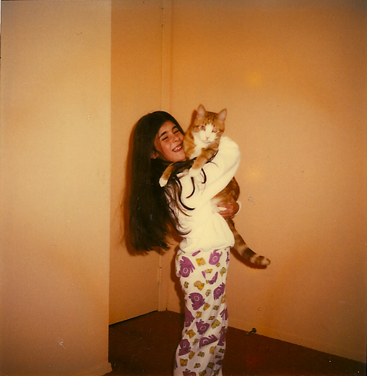

Jenni Belser
About Me
So, a few things before we get started. You're probably wondering who I am and what I'm about. Here's some info for ya!
- My favorite band is TOOL
- I am OBSESSED (I mean obsessed) with cats. #meow. I don't have any though.
- I've been with my boyfriend for close to 9 years, but we don't live together. We are very happy, but I hope things change soon. I'd love to become a mom!
- I'm a licensed esthetician by trade, but I'm not sure it's my passion anymore. I think NYC burned me out on people. :(
- I lost my mom in 2010, and I'm pretty sure I'll never feel 100% pure joy again. I miss her a lot.
- I'm not great at saying no to people, especially my friends. This means that I end up going above and beyond for them, and would give them the clothing off of my back if needed. I'm usually someone that people turn to if they have problems.
- When I turned 35, I decided I wanted to get fit and overhauled my workouts. I had never been to the gym before. Fast forward 4 years, and I am now a NASM CPT, but I don't train anyone.
- I'm 39 and I feel like I'm 19 sometimes. I don't have it all figured out and I feel lost a majority of the time. I'm thankful for my family, significant other, and friends, otherwise I think I'd feel very alone.
- Even though I have a hard time saying no to my friends, when it comes to work, I'm a different person. I'm known as the "bitch" and I am probably only liked by a select few.
- I love to learn. I've always had a desire to know things.
- If I was good at math (and smarter) I would have loved to become an astrophysicist.
- It's really hard for me to make habits - I am not sure if it's laziness but I don't always do the same thing day to day.
- I shake when I laugh - my whole body moves, but most people think it's cute
- I love makeup and probably have more than anyone you know